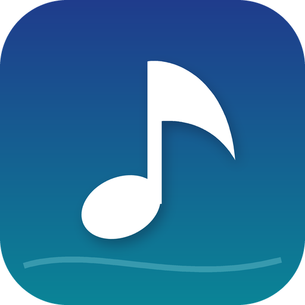

Search, play and keep YouTube Music in Jellyfin and Finamp.
manifest.json
https://<your-jellyfin>/YouTube.Jellyfin 12.4. Tunefin also needs its small companion service, ytm-sidecar, which runs yt-dlp and ffmpeg. Set it up with Docker, or directly on the server:
Tunefin is not affiliated with YouTube, Google or Jellyfin. It uses yt-dlp and unofficial YouTube APIs, which can break at any time.